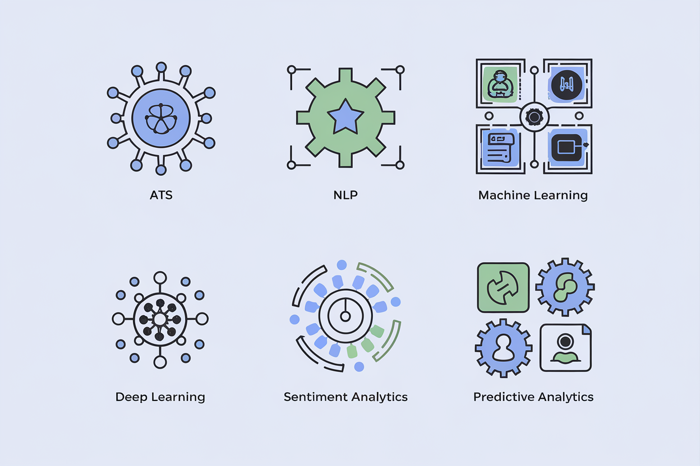
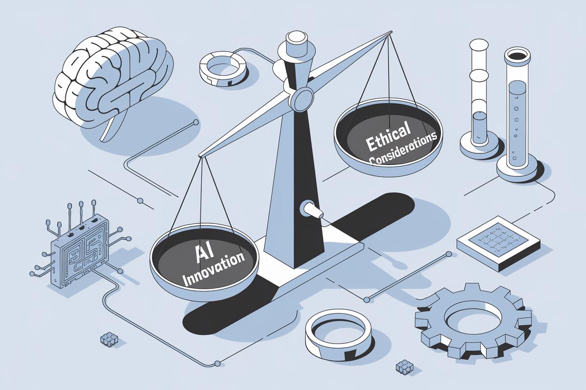
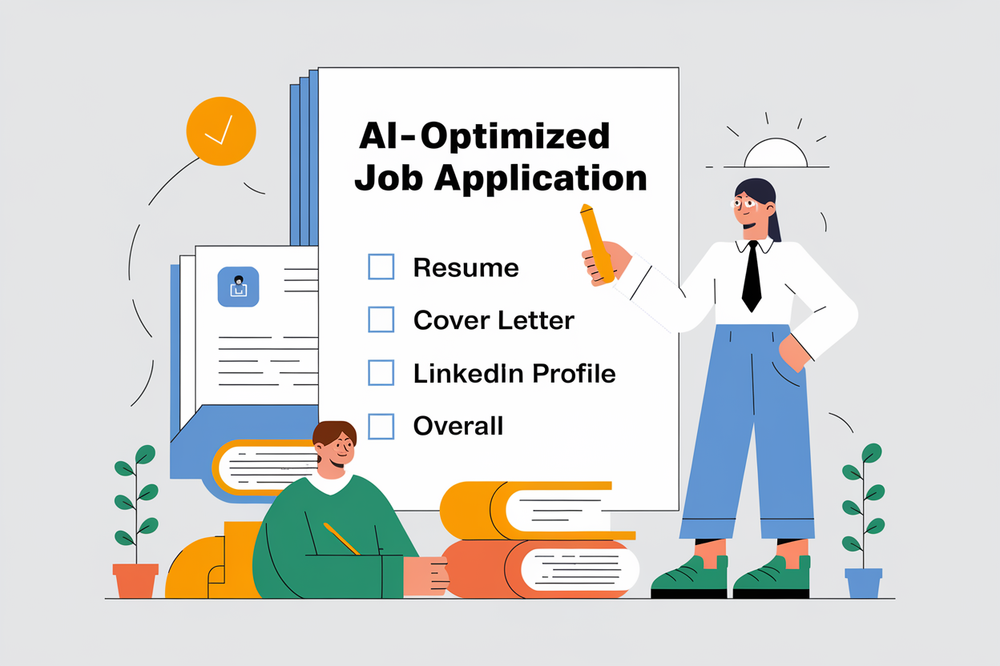

Appendices: Your Swiss Army Knife for AI-Powered Job Hunting
Welcome to the appendices, dear STEM superheroes! Think of this section as your utility belt, packed with all the gadgets and gizmos you need to navigate the AI-powered job market. We've got everything from a decoder ring for AI jargon to a treasure map of career-boosting tools.
Appendix A: Glossary of AI Terms in Hiring (Or: How to Speak Robot in Job Interviews)

1. Applicant Tracking System (ATS)
The digital bouncer of the job application world. It's like the Sorting Hat from Harry Potter, sorting resumes into "maybe" and "nope" piles.
2. Natural Language Processing (NLP)
The AI's way of deciphering human language. It turns your human words into machine-comprehensible data.
3. Machine Learning (ML)
The part of AI that learns from experience. It never gets tired, never needs coffee, and can process terabytes of data without complaining.
4. Deep Learning
A more complex form of machine learning that uses neural networks with multiple layers. It's Machine Learning after it hit the gym and got a PhD.
5. Sentiment Analysis
The use of NLP to determine the emotional tone behind words, i.e. the robot therapist that analyzes your cover letter's mood.
6. Keyword Optimization
The art of sprinkling your resume with just the right amount of industry buzzwords. It's like seasoning a gourmet dish, but instead of salt and pepper, you're using "synergy" and "blockchain".
7. Predictive Analytics
Using data to predict future outcomes, like having a crystal ball filled with algorithms and data points.
8. AI Bias
When AI systems show systematic prejudice. A racist robot is not cool, and definitely something we need to fix.
9. Semantic Analysis
The process of drawing meaning from text using AI, like a literature professor analyzing the deeper meaning of your resume.
10. AI-Powered Skill Gap Analysis
Using AI to identify what skills you're missing for a job.
Appendix B: AI Tools for STEM Job Seekers
Appendix C: AI Ethics Resources for STEM Professionals (Or: How to Keep Your AI on the Straight and Narrow)

- IEEE Ethically Aligned Design: https://ethicsinaction.ieee.org/
- AI Ethics Guidelines Global Inventory: https://inventory.algorithmwatch.org/
- ACM Code of Ethics and Professional Conduct: https://www.acm.org/code-of-ethics
- AI Ethics: A Guide for STEM Professionals (Online Course): https://www.edx.org/course/ai-ethics-for-stem-professionals
- The Ethics of AI in Hiring: A Comprehensive Overview: https://hbr.org/2021/03/the-ethics-of-ai-in-hiring-a-comprehensive-overview
Appendix D: AI in STEM: Industry Trends and Predictions (Or: Your Crystal Ball for the Techno-Future)
- World Economic Forum: The Future of Jobs Report: https://www.weforum.org/reports/the-future-of-jobs-report-2020 - A weather forecast for careers. Cloudy with a chance of automation!
- MIT Technology Review: 10 Breakthrough Technologies: https://www.technologyreview.com/10-breakthrough-technologies/2021/ - The Oscars of the tech world, minus the long speeches and awkward dance numbers.
- IEEE Computer Society: Technology Predictions: https://www.computer.org/publications/tech-news/trends - Where computer geeks go to get their fortunes told.
- AI in STEM Fields: Current Trends and Future Prospects: [Link to downloadable white paper] - More thrilling than a sci-fi novel, and potentially more accurate!
- The Impact of AI on STEM Careers: A 5-Year Forecast: [Link to downloadable report] - Like a roadmap for your career, but with more plot twists than a Christopher Nolan movie.
Appendix E: Checklist for AI-Optimized Job Applications (Or: Your Pre-Flight Checklist for Career Liftoff)

1. Resume
- [ ] ATS-friendly format (.docx or .pdf) - No papyrus scrolls or stone tablets, please.
- [ ] Clear, standard section headings - "Stuff I'm Good At" is not a professional heading, no matter how accurate.
- [ ] Keyword-rich professional summary - Like a movie trailer, but for your career.
- [ ] Quantified achievements - Because "I did a lot of stuff" isn't as impressive as "Increased efficiency by 200%".
- [ ] Skills section with proficiency levels - From "I can do this in my sleep" to "I might need a cup of coffee first".
- [ ] No images, charts, or complex formatting - Save the modern art for your gallery opening, not your resume.
2. Cover Letter
- [ ] Addressed to the correct person/department - "To Whom It May Concern" concerns no one.
- [ ] Incorporates keywords from the job description - It's like SEO, but for your career.
- [ ] Highlights 2-3 most relevant achievements - Your greatest hits album, professional edition.
- [ ] Demonstrates knowledge of the company - Show them you've done your homework (and actually enjoyed it).
- [ ] Clear structure (intro, body, conclusion) - A three-act play, starring You as the perfect candidate.
3. LinkedIn Profile
- [ ] Professional photo - No fish pics or mirror selfies, please.
- [ ] Keyword-rich headline and summary - Your professional tagline, but cooler than "I'll be back".
- [ ] Detailed experience sections mirroring resume - Consistency is key, like in baking or world domination.
- [ ] Skills endorsed and validated - Collect endorsements like Pokémon – gotta catch 'em all!
- [ ] Recommendations from colleagues/supervisors - Because sometimes, you need others to toot your horn.
4. Portfolio (if applicable)
- [ ] Easy to navigate structure - Don't make them feel like they're solving a Rubik's cube.
- [ ] Project descriptions optimized with keywords - Speak the language of both humans and robots.
- [ ] Quantified results and impact - Numbers speak louder than words (in most languages, except maybe Binary).
- [ ] Links to live projects or GitHub repositories - Show, don't just tell. It's like "Show and Tell" for grown-ups.
5. Overall
- [ ] Consistent information across all platforms - Be like a good story – consistent, compelling, and without plot holes.
- [ ] Tailored application for the specific job - One size fits all works for snuggies, not job applications.
- [ ] Proofread for errors and typos - Because "attention to detale" is ironic in all the wrong ways.
- [ ] Tested with an ATS simulation tool - Give your application a trial run before the big race.
Fun Fact: If resumes existed in the animal kingdom, peacocks would have a 100% success rate. Fortunately for us humans, job success requires more than just colorful feathers.
Appendix F: Further Reading (Or: Your Textbooks for the University of Awesome Careers)
- "AI 2041: Ten Visions for Our Future" by Kai-Fu Lee and Chen Qiufan - It's like "Black Mirror," but with more AI and fewer existential crises.
- "Human + Machine: Reimagining Work in the Age of AI" by Paul R. Daugherty and H. James Wilson - Discover how to be the Tony Stark to AI's JARVIS.
- "The Algorithmic Leader: How to Be Smart When Machines Are Smarter Than You" by Mike Walsh - Learn to lead in a world where your smartphone might be smarter than you.
- "AI Superpowers: China, Silicon Valley, and the New World Order" by Kai-Fu Lee - A geopolitical thriller, minus the car chases but with 100% more algorithms.
- "The Future of Work: Robots, AI, and Automation" by Darrell M. West - Spoiler alert: The future involves fewer water coolers and more chatbots.